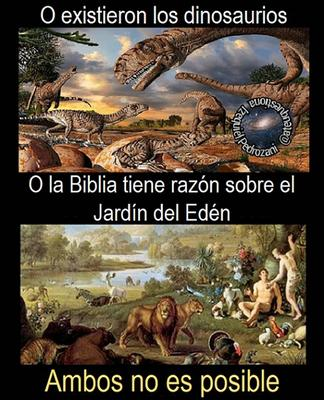

Desde la antropología cultural sabemos que los textos sagrados son productos históricos: reflejan el nivel de conocimiento, los temores, las esperanzas y las limitaciones intelectuales de las sociedades que los redactaron. Y en ese sentido, la ausencia total de dinosaurios en la Biblia no es un detalle menor, ni una simple curiosidad terminológica: es un síntoma claro de que sus autores ignoraban por completo la historia profunda de la vida en la Tierra.


La ciencia ha demostrado de forma abrumadora que los dinosaurios existieron desde hace aproximadamente 230 millones de años, hasta su extinción hace 66 millones de años. Durante unos 160 millones de años dominaron los ecosistemas terrestres. El ser humano, en cambio, aparece en el registro fósil hace apenas unos cientos de miles de años. Por lo que entre ambos hay un abismo temporal imposible de conciliar con una lectura literal del Génesis.
Los primeros restos fósiles identificables como dinosaurios comenzaron a estudiarse a inicios del siglo XIX. En 1822, en Sussex, Inglaterra, Mary Ann Mantell y su esposo, descubrieron fósiles que más tarde serían identificados como de Iguanodon. Y en 1842, el anatomista británico Richard Owen propuso el término «Dinosauria» (del griego deinós, terrible, y sauros, lagarto) para agrupar a estos reptiles fósiles.
Pero el hecho de que la palabra «dinosaurio» sea moderna no es el punto central. El problema es que la Biblia —si fuera una revelación divina sobre la creación del mundo— debería reflejar al menos indirectamente (con otro nombre, con alguna descripción) la existencia de estas criaturas que dominaron el planeta durante millones de años. Sin embargo, el relato del Génesis presenta una cronología incompatible con la paleontología y la geología modernas.
Algunos creyentes intentan salvar la coherencia afirmando que los dinosaurios están incluidos dentro de expresiones generales, como «bestias del campo» (Génesis 2:19). Pero esa explicación genera un problema mayor: si fueron creados junto con «todo ser viviente que se mueve» (Génesis 1:21), entonces habrían coexistido con los primeros humanos en un mundo reciente de pocos miles de años. Sin embargo, la evidencia fósil demuestra que eso no ocurrió.
Si tomáramos literalmente esa narrativa bíblica, Adán y Eva habrían compartido el mundo con criaturas como el Tyrannosaurus rex o el Triceratops. Sin embargo, los dinosaurios no sólo vivieron muchísimo antes que los humanos, sino que su extinción fue un evento crucial que permitió la expansión de los mamíferos y, eventualmente, la evolución de nuestra especie. Sin su extinción masiva, los humanos muy probablemente no existiríamos.
O sea, la incompatibilidad es clara:
O la Tierra tiene miles de millones de años y los dinosaurios existieron —como lo demuestra la ciencia.
O el relato bíblico es correcto, y los dinosaurios no existieron, y la paleontología está equivocada en todos sus fundamentos (datación radiométrica, estratigrafía, tectónica de placas, biología evolutiva).
Pero sucede que negar la existencia de los dinosaurios, implicaría desmontar prácticamente toda la ciencia moderna.
A pesar de todo, algunos movimientos creacionistas han intentado resolver el conflicto incorporando dinosaurios en su narrativa bíblica. El apologista fundamentalista Ken Ham por ejemplo, fundador del Creation Museum (Museo de la Creación) y promotor del Ark Encounter, ha presentado reconstrucciones donde dinosaurios conviven con humanos y abordan el Arca de Noé.
Algo que desde la antropología no es evidencia de coherencia teológica, sino de adaptación narrativa: cuando la ciencia presenta datos innegables, ciertos sectores religiosos no abandonan el mito, sino que lo reconfiguran para absorber el nuevo conocimiento, sin renunciar a la autoridad de su texto sagrado.
Existen algunas sectas incluso, que han llegado a afirmar que ciertas especies «grotescas» o «feroces» no fueron creadas por «Dios», sino que surgieron por obra de Satanás, mediante mutaciones y degeneraciones. Pero paradójicamente adoptan conceptos científicos como «mutación» y «selección natural», aunque los reinterpretan dentro de una cosmología sobrenatural. Se trata de un sincretismo que revela una tensión constante entre fe literalista y evidencia empírica.
Pero desde una perspectiva racional y científica, la causa del conflicto es evidente: la Biblia es un documento cultural del antiguo Cercano Oriente, redactado por pueblos que desconocían la inmensidad del tiempo geológico y la evolución biológica. Y no menciona a los dinosaurios, simplemente porque sus autores jamás imaginaron que el planeta tuviera ese pasado.
Sin embargo, la existencia de los dinosaurios no es una hipótesis marginal: está respaldada por millones de fósiles, por múltiples métodos independientes de datación, y por una coherencia transversal entre geología, biología y física.
Es decir, para plantearlo en términos claros, si aceptamos la evidencia científica, debemos reconocer que la cronología literal del Génesis es incorrecta, y si insistimos en la veracidad del relato bíblico, debemos rechazar el consenso científico global.
La antropología nos enseña que los mitos fundacionales cumplen funciones simbólicas, identitarias y morales, pero no son tratados de paleontología. El problema surge cuando se pretende que lo sean. Y lo cierto es que, en el caso de los dinosaurios, la evidencia habla con una contundencia que ningún texto antiguo puede silenciar.
[Godless Freeman]
Comentarios
Comments powered by Disqus